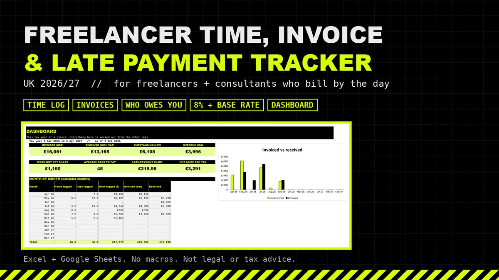
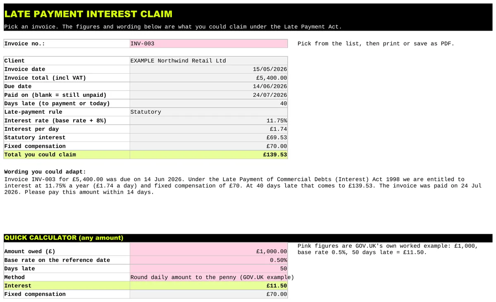

Freelance
UK Freelancer Time, Invoice and Late Payment Tracker 2026/27
Time in one place, invoices in another and a sticky note of who has not paid. This spreadsheet keeps all three together and works out statutory late payment interest when a client is late.
Price on Gumroad
£14.99
Buy on GumroadEstimate, not legal or tax advice. Late payment rules may change if the Commercial Payments Bill becomes law.

Who it's for
- UK freelancers and consultants who bill by the hour or the day.
What's included
- Clients: day rate, hourly rate and payment terms, marked as a business, a public authority or a consumer.
- Time Log: one row per piece of work in hours or days. The rate fills in from the client unless you change it.
- Invoices: net, VAT, total and due date add up from the time they cover. Add expenses or fixed fees, and the date paid.
- Dashboard: invoiced and received this tax year, outstanding and overdue, unbilled work, average days to pay, aged debt and top clients.
- Interest Claim: statutory interest at 8% over the Bank of England base rate with the right half year reference rate, the fixed £40, £70 or £100 compensation, and chaser wording you can adapt.
- Rates & Sources: every rule linked to GOV.UK, the Bank of England or legislation.gov.uk.
Works in Excel, Google Sheets and LibreOffice. No macros.
What it isn't
- Accounting or your tax return.
- Partial payments. They are not modelled for interest.
Preview

Free calculator
Want a quick figure first? No sign up.
Freelancer time, invoice and late payment tracker: £14.99 on Gumroad
Estimate, not legal or tax advice. Late payment rules may change if the Commercial Payments Bill becomes law.
More templates
- CIS subcontractor tracker £14.99
- CIS contractor tracker £14.99
- Mileage and expenses log Lite Free, pay what you want (£0+)
- Both sides of CIS bundle £21.99
- Executor and probate tracker £19.99
- Gifts and IHT 7 year tracker £12.99
- Sales dashboard and VAT threshold watch £12.99